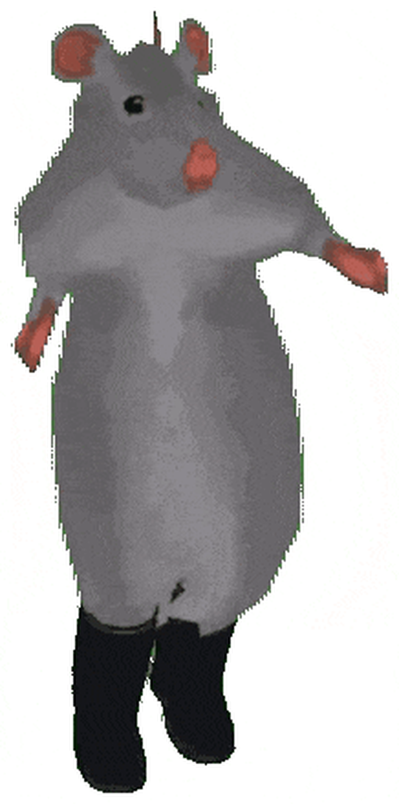

meeting every wednesday at 7pm
in stanley coulter 114
purduerationality.net
Letter portrait. Preview is scaled to fit your window; it prints full size. If your browser still prints a header or footer, untick “Headers and footers” in the print dialog’s options.